Quick notes, clipboard history, 2FA codes, scriptable plugins, and battery charge-limiting, one keystroke away. Local-first, free, and open source.
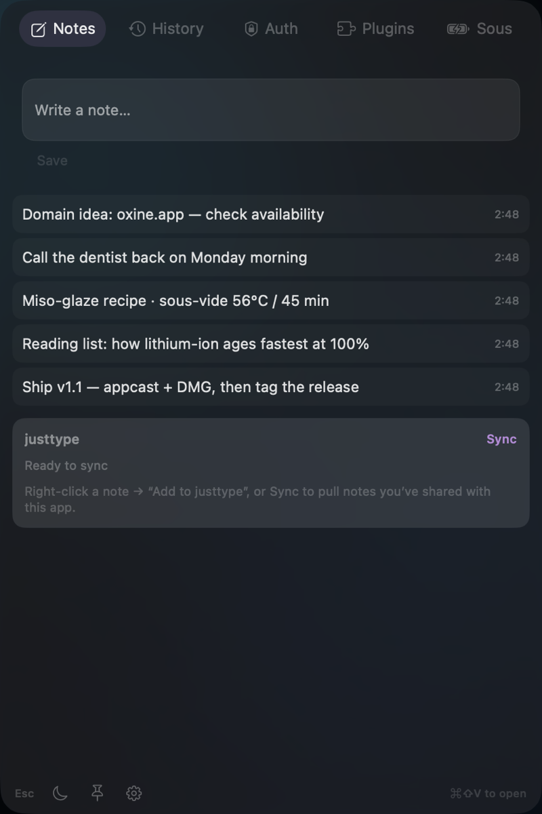
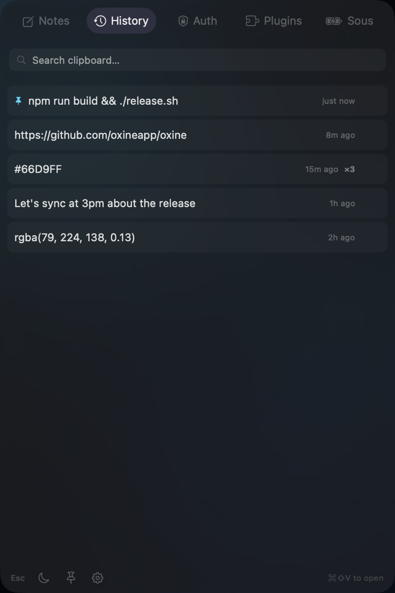
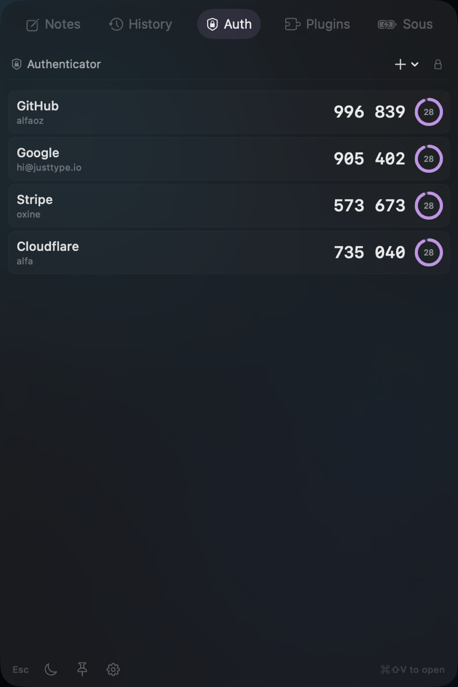
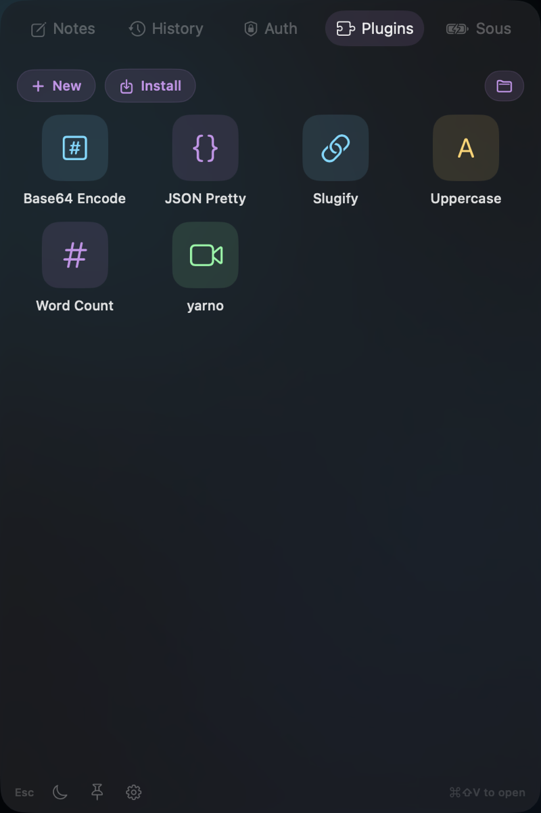
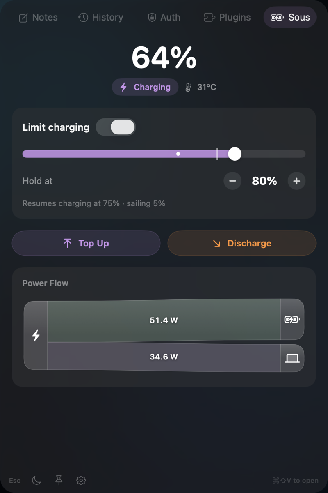
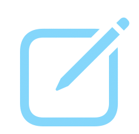
Hit a key, type the thing, and it's saved before the thought slips away. Every note is plain markdown in a folder you choose, so nothing is locked in a database. Open it in Obsidian, your editor, or Finder, whenever you like.
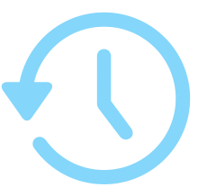
Oxine quietly keeps a history of what you copy, so the link or snippet you grabbed an hour ago is still a click away. Search the whole thing, and pin the bits you reach for again and again. It never leaves your Mac.
Your two-factor codes sit right in the menu bar, generated on-device and stored in the Keychain. Unlock with Touch ID, grab the code, and you're in, no scrambling for your phone before the timer runs out.
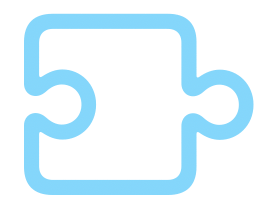
Write a tiny script in any language and Oxine runs it on whatever you've copied or selected. Format some JSON, convert a value, hit an API; wire it up once and it's a keystroke away from then on.
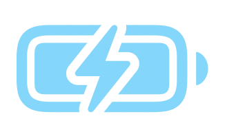
Low and slow beats a rolling boil. Sous holds your charge at the limit you set instead of cooking the cell at 100% all day, and shows the watts flowing in and out as it works. Your battery just ages slower, quietly.
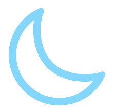
Dim and blur everything except the window you're working in. One keystroke and the rest of the screen sinks into the background, so the only thing in front of you is the thing you're actually doing.
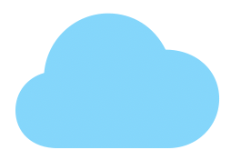
Connect your justtype account and your notes sync end-to-end encrypted across your devices, editable from anywhere you type. Local-first when you want it, everywhere when you need it.